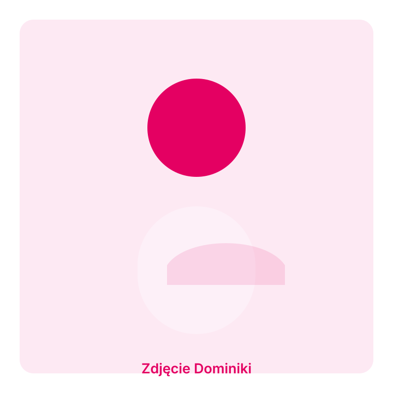

Fizjoterapia uroginekologiczna
Kompleksowe wsparcie przy zaburzeniach dna miednicy i problemach związanych z funkcjonowaniem układu moczowego.
Fizjoterapia · rehabilitacja · wsparcie
Indywidualnie dobrany plan terapii, doświadczenie w fizjoterapii ortopedycznej i uroginekologicznej oraz przyjazna atmosfera, która pomaga wrócić do pełni sił.

Kompleksowa terapia i wsparcie na każdym etapie rehabilitacji.
O mnie

Cześć, dzień dobry! 🙂
Ostatnio pojawiło się tutaj sporo nowych osób, więc postanowiłam krótko się przedstawić. Dla stałych bywalców będzie to szybkie przypomnienie 😉
Nazywam się Dominika i jestem magistrem fizjoterapii. Studia skończyłam na AWF w Poznaniu. Od tego czasu stale podnoszę swoje kwalifikacje, zdobywam nową wiedzę i doświadczenie na różnych kursach i studiach podyplomowych 😁
W swojej pracy skupiam się głównie na fizjoterapii ortopedycznej, w której łączę techniki manualnej pracy z ciałem, z mechanicznym drenażem limfatycznym, a także wykorzystuję sprzęt Hi-Top (prądy średniej częstotliwości), aby uzyskać jak najlepsze efekty terapii 😊
Kolejnym aspektem mojej pracy jest fizjoterapia estetyczna (PhysioKobido), gdzie terapią objęte jest całe ciało, głowa i twarz. Dzięki temu efekty widoczne są zarówno w ciele, jako poprawa sylwetki, zmniejszenie dolegliwości bólowych i napięcia mięśniowego, ale także na twarzy w postaci zmniejszenia asymetrii, poprawy krążenia i redukcji obrzęków, oraz naturalnego liftingu 💜
Do każdego pacjenta i jego problemów z ciałem podchodzę indywidualnie i holistycznie, nie działam tylko w miejscu "bólu" 😉 Celem mojej pracy jest, aby pomóc każdemu, kto do mnie przychodzi i aby każdy z Was czuł się zawsze wysłuchany, zrozumiany i zaopiekowany 😊💜
Zaobserwuj profil i bądź na bieżąco 😉
Kontakt
☎️ 664 465 302
🏠 Aleja Zdobywców Wału Pomorskiego 2/1
Oferta
Kompleksowe wsparcie przy zaburzeniach dna miednicy i problemach związanych z funkcjonowaniem układu moczowego.
Bezpieczne ćwiczenia i terapia pomagające zmniejszyć dolegliwości bólowe oraz przygotować ciało do porodu.
Wsparcie w powrocie do formy i regeneracji mięśni brzucha oraz dna miednicy po porodzie.
Pomoc w poprawie elastyczności tkanek po zabiegach chirurgicznych, urazach i oparzeniach.
Rehabilitacja po urazach, operacjach i przewlekłych bólach narządu ruchu.
Kompleksowe podejście do bólu, które łączy terapię manualną, ćwiczenia i edukację pacjenta.
Kwalifikacje
Szkolenia z zakresu terapii manualnej, pracy z bólem przewlekłym i rehabilitacji kobiet.
Praca z pacjentami z różnymi problemami ortopedycznymi, ginekologicznymi i pooperacyjnymi.
Wykorzystanie sprawdzonych, bezpiecznych i skutecznych metod terapeutycznych.
Opinie pacjentów
„Profesjonalizm, empatia i szybka poprawa. Polecam każdemu, kto szuka skutecznej fizjoterapii.”
Anna K.„Bardzo ciepła atmosfera i jasne wyjaśnienie problemu. Po kilku wizytach poczułam ulgę.”
Michał W.„Najlepsza pomoc w okolicy. Zawsze indywidualne podejście i ogromne zaangażowanie.”
Katarzyna N.Najczęściej zadawane pytania
Nie, możliwe jest przyjęcie bez skierowania. Jeśli masz dokumentację lub zalecenia, warto je zabrać ze sobą.
Standardowo pierwsza konsultacja trwa około 60 minut i obejmuje wywiad, ocenę funkcjonalną oraz plan terapii.
Warto przyjść 10 minut wcześniej, zabrać dokumentację medyczną i ubrać się komfortowo, tak aby umożliwić swobodne ruchy.